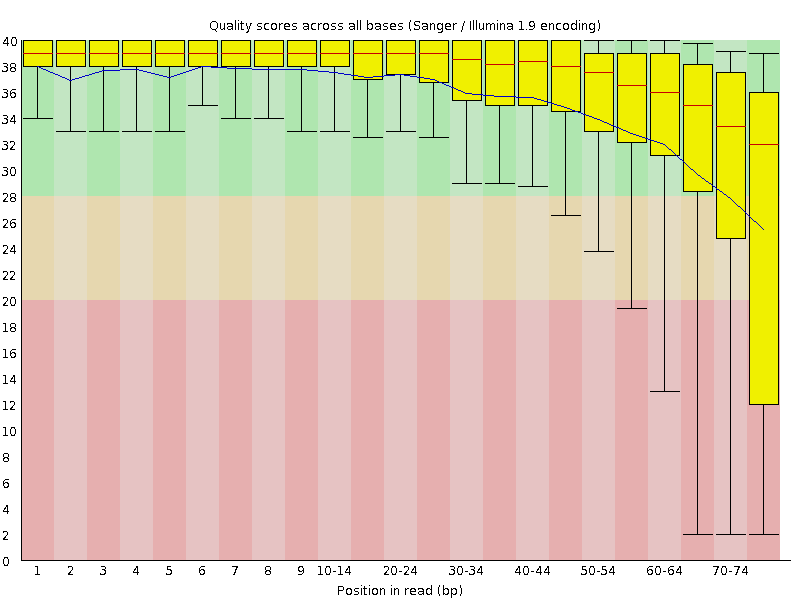
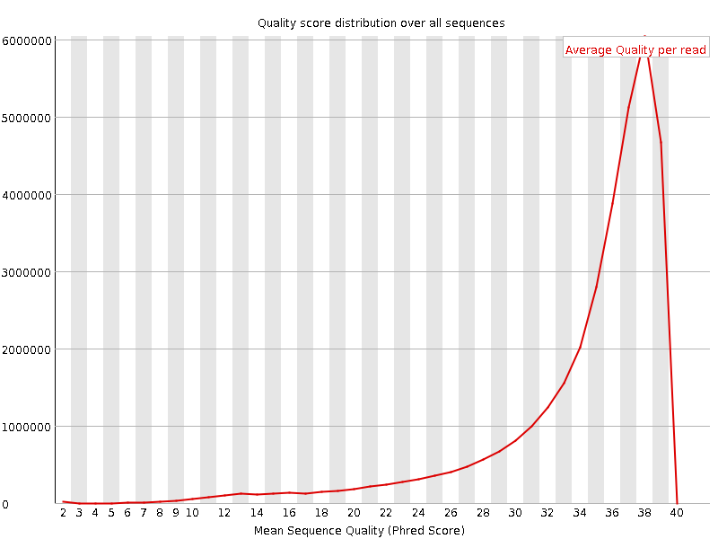
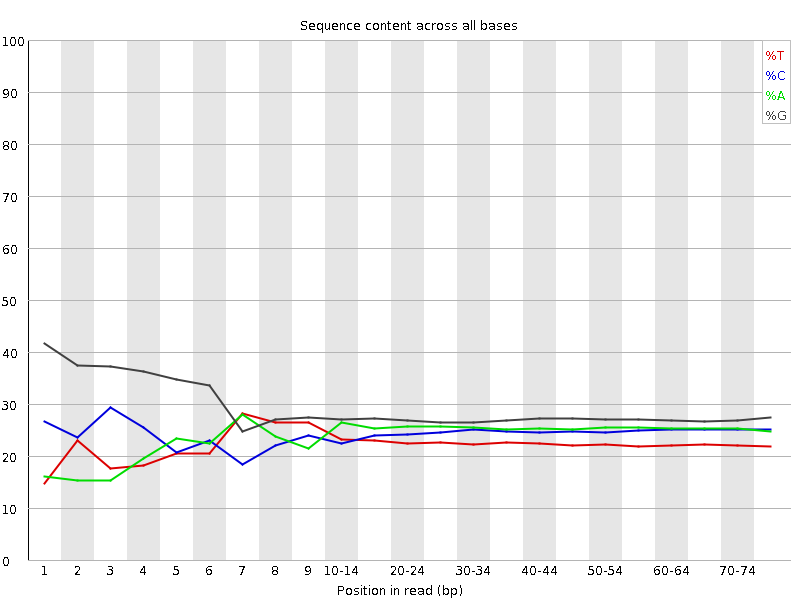
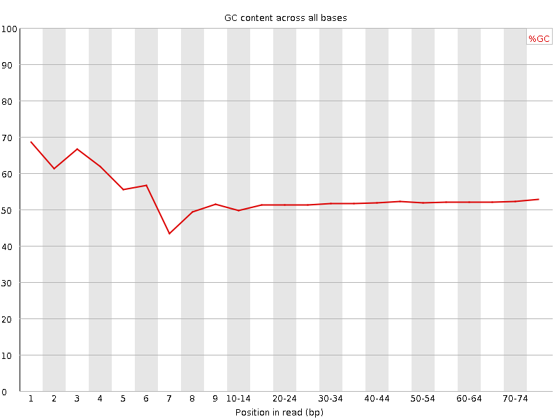
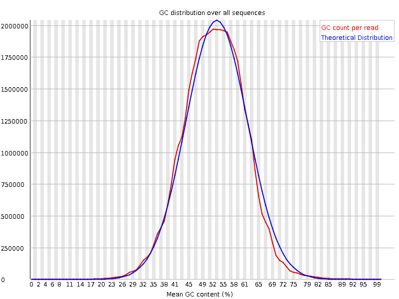
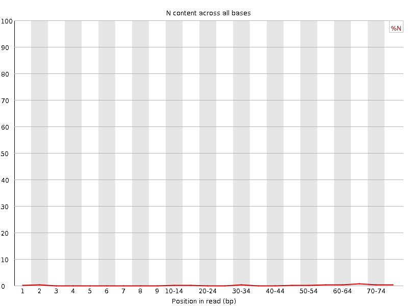
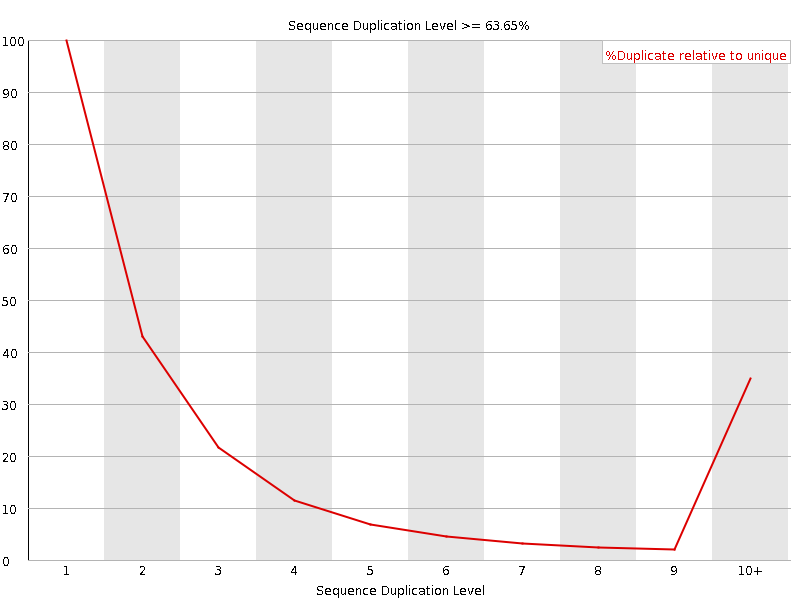
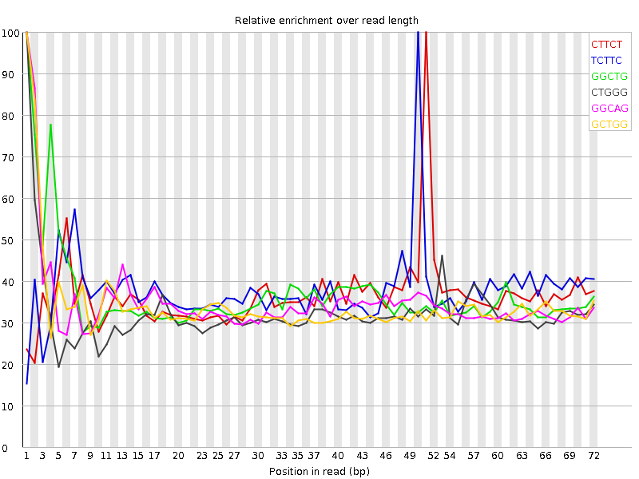

![[OK]](Icons/tick.png) Basic Statistics
Basic Statistics
| Measure | Value |
|---|---|
| Filename | SRR307914_1.fastq |
| File type | Conventional base calls |
| Encoding | Sanger / Illumina 1.9 |
| Total Sequences | 34353078 |
| Filtered Sequences | 0 |
| Sequence length | 76 |
| %GC | 52 |
Per base sequence quality

Per sequence quality scores

![[FAIL]](Icons/error.png) Per base sequence content
Per base sequence content

Per base GC content

Per sequence GC content

Per base N content

Sequence Length Distribution

Sequence Duplication Levels

![[WARN]](Icons/warning.png) Overrepresented sequences
Overrepresented sequences
| Sequence | Count | Percentage | Possible Source |
|---|---|---|---|
| CCGTCGGCATGTATTAGCTCTAGAATTACCACAGTTATCCAAGTAGGAGA | 43558 | 0.1267950429361817 | No Hit |
| CCCGTCGGCATGTATTAGCTCTAGAATTACCACAGTTATCCAAGTAGGAG | 41239 | 0.12004455612390831 | No Hit |
| GATCGGAAGAGCGGTTCAGCAGGAATGCCGAGACCGATATCGTATGCCGT | 40792 | 0.11874336267626441 | Illumina Paired End PCR Primer 2 (98% over 50bp) |
| GTCGGCATGTATTAGCTCTAGAATTACCACAGTTATCCAAGTAGGAGAGG | 37092 | 0.10797285762865266 | No Hit |
Kmer Content

| Sequence | Count | Obs/Exp Overall | Obs/Exp Max | Max Obs/Exp Position |
|---|---|---|---|---|
| CTTCT | 3295045 | 1.9454244 | 5.3298306 | 51 |
| TCTTC | 3289595 | 1.9422067 | 5.1066036 | 50 |
| GGCTG | 5702170 | 1.9400568 | 5.2749085 | 1 |
| CTGGG | 5681760 | 1.9331126 | 5.957701 | 1 |
| GGCAG | 5977720 | 1.8269156 | 5.210752 | 1 |
| GCTGG | 5270090 | 1.7930496 | 5.2331476 | 1 |
| GGGAG | 5928965 | 1.6033219 | 5.521556 | 1 |
| GTGGG | 4732585 | 1.4247268 | 7.291584 | 1 |
| TGGGG | 4620695 | 1.3910427 | 5.0638537 | 1 |
| GGGGA | 4875765 | 1.3185135 | 6.427611 | 1 |
| GGGGG | 5276810 | 1.2819934 | 6.2045403 | 1 |
| GGGGT | 3796030 | 1.1427805 | 5.5019794 | 3 |